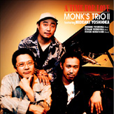
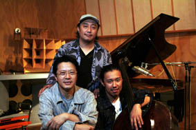
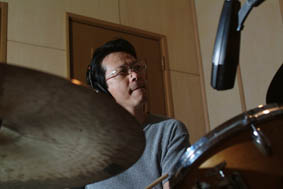
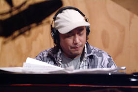
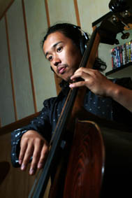
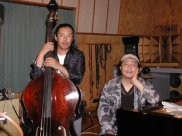
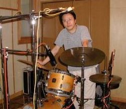
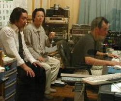

2004.07.14 河内スタヂオ録音
A Time For Love
Monk's Trio II feat. 吉岡秀晃小林陽一 (ds) / 吉岡秀晃 (p) / Etham 吉岡 (b)
About the Album
作品紹介
A TIME FOR LOVE
MONK’S TRIO Ⅱ
featuring HIDEAKI YOSHIOKA
小林陽一（ドラム）
吉岡秀晃（ピアノ）
Etham 吉岡（ベース） ￥2，8００
（CD代、税込み）
￥2，8００
（CD代、税込み）
1. A Time For Love 2 Un Poco Loco 3. Long Ago And Faraway 4. Nero
5. Strike Up The Band 6 The Moon In Rio 7．Misty
日本で最もグルーヴィーでファンキーなピアニスト、吉岡秀晃をフィーチャー、ベースは成長著しい彼の愛息、Etham 吉岡が務め小林との相性も良く息のあった演奏を展開。才人吉岡秀晃を迎え、一層輝きを増す小林陽一のモンクス・トリオ
Recording Report
レコーディングレポート
モンクストリオ ２ Recording Report
レコーディングレポート7/14 2004

小林陽一さんから電話で「またレコーディングお願いしたいのだけど」 いいですよ今回は誰とですか？「ピアノが吉岡秀晃でベースがETHAM です」、わーい吉岡さんかー、絶対にやりたい、スタジオあいてます。二つ返事でOK！
で、ETHAM は？ 「イサムだよ、吉岡の息子の」
へ？ あのイサム君？ 私はおむつがとれたかどうかあたりの頃しか覚えてない。
でも私の娘より確か1歳上だから22歳になってるはず、そうかそんなに大きくなったのか・・・。
そういえば吉岡さんが息子はベースを習ってると言ってたのを思い出した。
そうか多分 ETHAM のファーストレコーディングになるのだろうからしっかり頑張らなければ、と自分に言い聞かせた。

１４日小林さんの運転するバンで到着久しぶりの再会だ。
すぐにドラムをセッティングしてサウンドチェック、私はドラムの録音のレベルを合わせるのに「タムの音ください、バスドラの音ください」 と言って各パーツごとに叩いてもらう事はしない。ちょっと早めの曲をリハーサルしてもらい、その音で各マイクのレベルを決めていく。
彼のオハコのカルチャーショックをバンドのリハーサルを兼ねて演奏してもらった。
何せ、今回録音時間があまり無くて6時間くらいで終了するスケジュールなのだ。
小林さんのポリシーでレコーディングは1日だけで仕上げるそうだ。うちのスタイルは3日ぐらいかけてゆっくり録音する事が多いのだが、彼はニューヨークのスタジオを借りて録音することが多くミュージシャンやスタジオのギャラなどを考えて1日で終わるというスタイルになったそうだ。
そういえば前回のビンセントとのレコーディングもLIVEだったので1日だった。


リオの月、WELCOME、と何テイクか録ったが、その後のウン・ポコ・ロコ、ミスティ、ロングアゴー、ストライプアップザ・ライトは、ほとんどTake 1で録っていった。
それにしても吉岡秀晃は本当にSwingする。 ETHAM も若いのに渋い音を出すプレーヤーになっていてうらやましいほどいい感じの親子関係だ。
私の息子なんかまったく録音とかjazzに興味が無くて私がリタイアしてもこのスタジオや機材とかはいらないそうだ（泣）。
録音は本当に6時間くらいで終了してしまった。適度な緊張感があっていい感じのアルバムを収録することが出来た。


